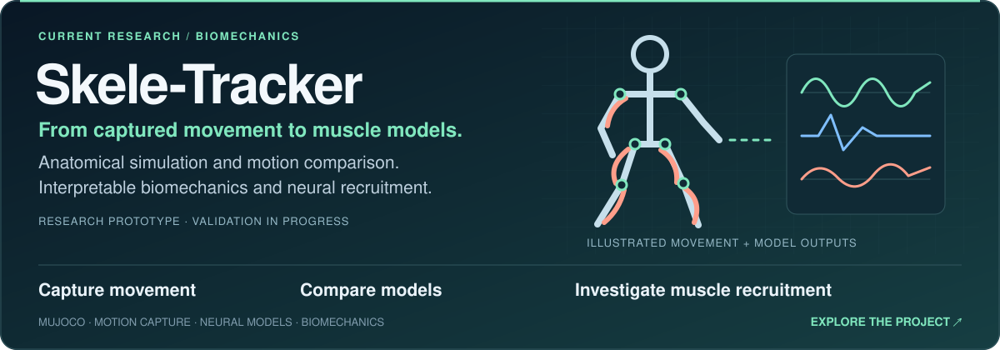
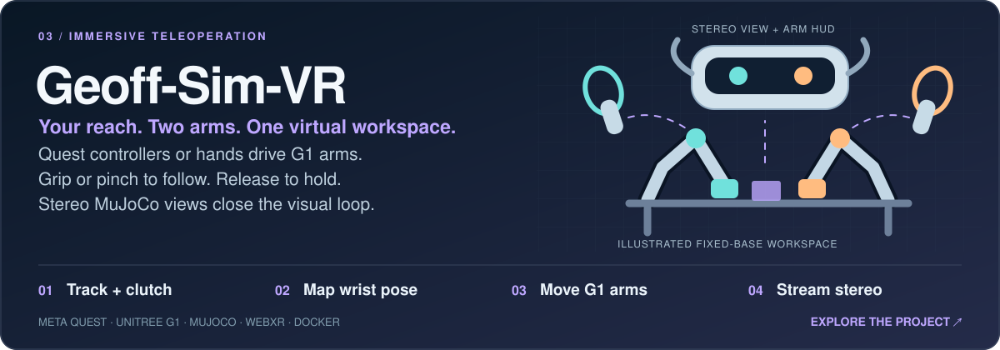
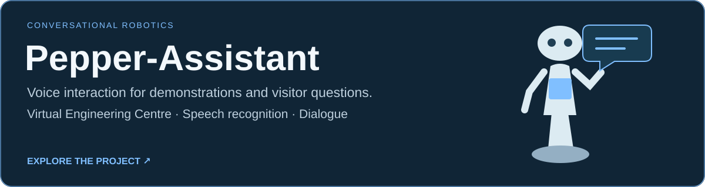

Skele-Tracker
Connecting captured movement with muscle-driven simulation for interpretable biomechanics research.
RESEARCHER / ENGINEER / BUILDER
PhD · MEng · MIET
AI & Cyberphysical Systems Engineer
Robotics Researcher
I build research software connecting human movement, robotic perception and physical action. From radiation-aware exploration to humanoid autonomy.
A little robot, finding its own way. Browser simulation · illustrative, not robot telemetry.
From research ideas to working demonstrations.
53.4° N / UNITED KINGDOM01 / RESEARCH IN MOTION
Research tools, robotic systems and simulations. Explore the repositories for methods, demonstrations and validation results.

Connecting captured movement with muscle-driven simulation for interpretable biomechanics research.

Radiation-aware Go2 exploration, online Gaussian process mapping and planning with a budget to return.

Sensor-driven humanoid locomanipulation: perceive, pick up, walk and deliver.

Meta Quest hand and controller input, fixed-base G1 arm teleoperation and stereo MuJoCo viewing.

Conversational robotics for public engagement at the Virtual Engineering Centre.
Project artwork shows illustrative schematics. Recorded demonstrations and validation details are available in the linked repositories.
02 / THE RESEARCH BEHIND THE ROBOTS
PhD research · University of Liverpool
September 2021 — April 2026
Robotic exploration, occupancy-map abstraction and radiation-aware mission planning.
Read the thesisBatty, West, Caliskanelli & Paoletti
Batty, Manes, West, Patel, Caliskanelli & Paoletti
03 / SYSTEMS THINKING, PRACTICAL TOOLS
Software and engineering across the whole loop: model the system, understand the environment, then make something move.
Navigation, SLAM, mission planning and radiation-aware exploration in unknown environments.
Humanoid and quadruped simulation, locomanipulation and immersive teleoperation.
Captured human movement, anatomical modelling, sensing and interpretable research software.
Previous postdoctoral research for Sony Europe and Japan, exploring physiological measurement and immersion.
Research repository (access required) ↗04 / MAKE THE CONNECTION
Research collaboration, robotic systems or software that connects the digital and physical. Let’s talk.
dwbatty@liverpool.ac.uk